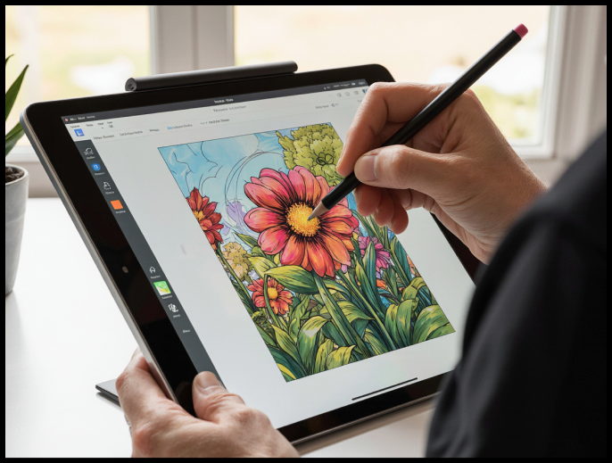
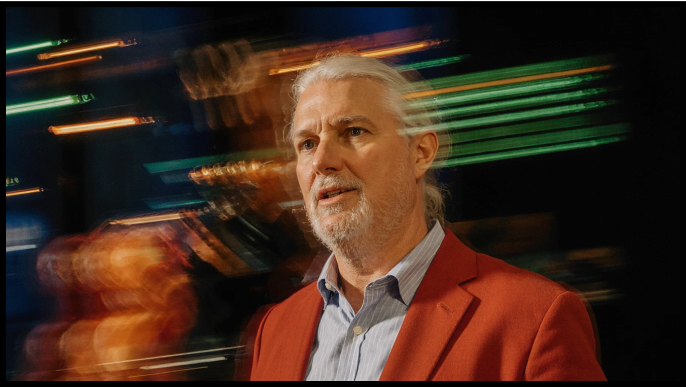

About me
I’m a UX and Product Design leader with 20+ years of experience translating vision into emotionally resonant, intuitive digital experiences. I began my career as a videographer and animator, where I learned that storytelling isn’t just a tool—it’s the core of influence. That belief continues to shape every product, brand, and experience I bring to life.

Today, I operate at the intersection of design, neuroscience, AI, and marketing strategy—blending creative
intuition with scientific insight to move people and shape behavior. My journey has led me to study:
Neuroscience
– to understand the psychology of emotion, motivation, and decision-making
Neuro-Linguistic Programming
(NLP) – to decode and reframe the mental models that drive human behavior
Innovative learning
strategies – to accelerate mastery and creative development
Artificial Intelligence – from generative
tools for storytelling and video, to agentic AI for automation, guidance, and ideation
Marketing
strategy – with a focus on viral video and narrative formats that amplify reach and emotional impact
Whether I’m mentoring design teams, leading product innovation, or creating story-driven content with AI, my
focus is always the same: to distill complexity into clarity, spark curiosity, and deliver experiences that
resonate.
My passion for art, animation, and storytelling remains as strong as ever—only now, I’ve
found a powerful partner in AI. Together, we’re pushing the boundaries of what’s possible in design,
marketing, and human-centered innovation.
Let’s connect and imagine what we can build together.
